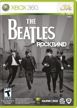

Experience The Beatles' musical career for themselves. From the early touring days in 1963 Liverpool to the immortal, final performance on the Apple Corps rooftop, fans can follow in the band's footsteps as they traverse the globe during the height of Beatlemania.
-
Details
- Screenshots

- Instruments
- Features
-
Gameplay - The Beatles: Rock Band story mode will take fans on an interactive, experiential journey through The Beatles career. Along the way, venues, set lists, clothing and instruments will replicate the band's rise to fame, represented in The Beatles' touring period from 1963 to1966 and their studio days from 1966 to 1969.
Catalogue - 45 songs will be available on-disc. Giles Martin, co-producer of The Beatles innovative LOVE album project and Music Supervisor / Creative Producer for The Beatles: Rock Band, unveiled the first ten songs that will be available on the game-disc: "I Saw Her Standing There",Å"I Want To Hold Your Hand", "I Feel Fine", "Taxman", "Day Tripper", "Back In The USSR", "I Am The Walrus", "Octopuses Garden", "Here Comes The Sun" and "Get Back.." Additional songs will be announced at a later date. Along with these 45 songs, the entire Abbey Road album will be available for future download purchase, as will additional music from The Beatles' catalogue.
Storyline - The game begins during the band's earliest days at The Cavern Club in Liverpool, England. Gamers will then travel across the Atlantic to experience the band's unforgettable 1964 performance on The Ed Sullivan Show, the sold-out concert at New York's Shea Stadium in 1965, and conclude at The Beatles' memorable concert at Budokan in Tokyo, Japan in 1966. The Beatles' studio years will come to life in legendary Studio 2 at Abbey Road Studios.
Highlighting the studio years are inspired artistic visual expressions known as Dreamscapes, intended to transport players to imaginative environments that capture the essence of The Beatles' genre-busting musical and fashion transformations during their later years. The game follows The Beatles to 1969 where story mode culminates with their final performance on the rooftop of the Apple Corps Headquarters.Instruments - The Beatles: Rock Band will offer a new set of hardware replicas representing the instruments made famous by John, Paul, George and Ringo. Featured in the set are the Rickenbacker 325 and Gretsch Duo Jet guitarsóhailed as two of the celebrated, signature instruments played by John Lennon and George Harrison throughout their careers. Also included is a Hˆfner bass controlleróa large-scale replica of the bass famously used by Sir Paul McCartney. Rounding out the set is a Ringo Starr inspired, Ludwig-branded Rock Band 2 drum set with a classic pearl finish and vintage replica Beatles kick drum head.

{kind=link}
{kind=link}
{kind=link}
{kind=link}
{kind=link}
{kind=link}
{kind=link}